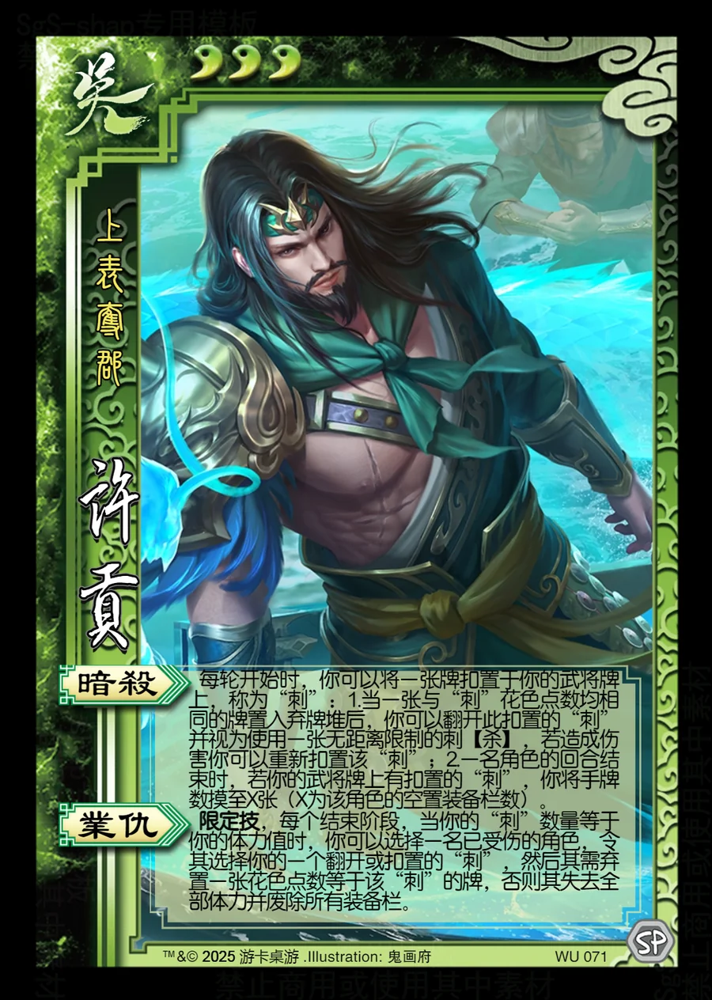

点击卡面查看大图
吴
许贡
♥3上表夺郡
暗杀
每轮开始时，你可以将一张牌扣置于你的武将牌上，称为“刺”：1.当一张与“刺”花色点数均相同的牌置入弃牌堆后，你可以翻开此扣置的“刺”并视为使用一张无距离限制的刺【杀】，若造成伤害你可以重新扣置该“刺”；2.一名角色的回合结束时，若你的武将牌上有扣置的“刺”，你将手牌数摸至X张（X为该角色的空置装备栏数）。
业仇限定技
限定技，每个结束阶段，当你的“刺”数量等于你的体力值时，你可以选择一名已受伤的角色，令其选择你的一个翻开或扣置的“刺”，然后其需弃置一张花色点数等于该“刺”的牌，否则其失去全部体力并废除所有装备栏。